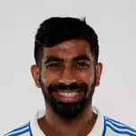
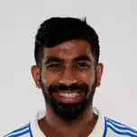

Witnessing India break their ICC T20 World Cup trophy drought by defeating South Africa in a thrilling final was nothing short of spectacular! ü§©üèÜ
Team India — Champions of the ICC T20 World Cup 2024 (source: MSN)
Indian Cricket fans will hardly ever forget the date “19th November 2023” — that heartbreak was real. Virat Kohli and Rohit Sharma, arguably the two best batsmen of this generation, had come agonizingly close to a World Cup trophy yet again. The gut-wrenching defeat stung, for them and for millions of fans who’d been yearning for this moment for ages.
Just 7 months later, our Men in Blue defied the odds, defeating every opposition in their way (while also avenging the previous defeats at the hands of Australia & England) & finally lifting the ICC T20 World Cup.
This win wasn’t just a trophy — it was a masterclass in resilience. Indeed, this was the last T20 World Cup for this legendary duo (and for Rahul Dravid as well, as coach of the Indian team), and they ensured that they got the farewell they deserved!
The happy faces of Virat Kohli (left), Rahul Dravid (centre) & Rohit Sharma (right) after the T20 WC victory (source: indiatimes.com)
Even the best folks have their bad days. As a leader, it’s your responsibility to recognize rough patches that your key team members might be undergoing & back them up at critical moments, instilling the lost confidence.
Backing the mighty Virat Kohli after the string of low scores in this tournament, Rohit Sharma proclaimed in the post-match presentation after the Semi-Final win (against England) that perhaps Virat is saving the best for the Finals — and boy did prove his skipper true!
Rohit Sharma backing Virat Kohli, and then Virat showing why he is considered the “King” of Cricket
Hardik Pandya had been caught up amidst a bunch of drama of late—he was trolled during the IPL, there were some serious rumours around his personal life, and even his inclusion in the World Cup squad was questioned by critics.
Despite of all this noise around him, he managed to deliver throughout this campaign as an impactful all-rounder, taking a total of 11 wickets & scoring crucial runs on several occasions. On the big stage too, he kept himself calm & composed, focused well on his strategies, & nailed the final over — scalping 2 critical wickets and defending 16 runs to ensure India’s triumph. His emotional statement after winning the cup, truly showcases what this win meant to him.

The magic wielded by Jasprit Bumrah with the ball throughout the tournament made him the trump card for India & a nightmare for any batter. The fear of his lethal array of tactics stifled many a team, leaving them with the only option to respect his spell & see through his 4 overs rather carefully (which is exemplified by his unreal economy of 4.17 runs/over & 18 wickets during this World Cup campaign). In the Finals too, he was instrumental in providing early breakthroughs, setting the tone of the match & keeping the team’s morale high. No wonder, he was the recipient of the “Player of the Tournament”!
Jasprit Bumrah — the pillar of the Indian bowling unit, working his magic once again for the team to deliver when required


 

| India Innigs | 176-7 (20 Ov) | |||||
|---|---|---|---|---|---|---|
| Batter | Runs | Balls | 4s | 6s | SR | |
| Rohith | c Klassen b Maharaj | 9 | 5 | 2 | 0 | 180.00 |
| Kohli | c Rabada b Marco Jansen | 76 | 59 | 6 | 2 | 128.81 |
| Pant (WK) | c de KocK b Maharaj | 0 | 2 | 0 | 0 | 0.00 |
| Suryakumar Yadav | c Klassen b Rabada | 3 | 4 | 0 | 0 | 75.00 |
| Axar | run out(de kocK) | 47 | 31 | 1 | 4 | 151.61 |
| Shivam_Dube | c David Miller b Nortje | 27 | 16 | 3 | 1 | 168.75 |
| Hardik Pandya | not out | 5 | 2 | 1 | 0 | 250.00 |
| Ravindra Jadeja | c Maharaj b Nortje | 2 | 2 | 0 | 0 | 100.00 |
| Bowler | Overs | Maiden | Runs | Wickets | No Ball | Wide | Economy |
|---|---|---|---|---|---|---|---|
| Marco Jansen | 4 | 0 | 49 | 1 | 1 | 1 | 12.20 |
| Maharaj | 3 | 0 | 23 | 2 | 0 | 0 | 7.70 |
| Rabada | 4 | 0 | 36 | 1 | 0 | 2 | 9.00 |
| Markram(c) | 2 | 0 | 16 | 0 | 0 | 0 | 8.00 |
| Nortje | 4 | 0 | 26 | 2 | 0 | 2 | 6.50 |
| Shamsi | 3 | 0 | 26 | 0 | 0 | 1 | 8.70 |